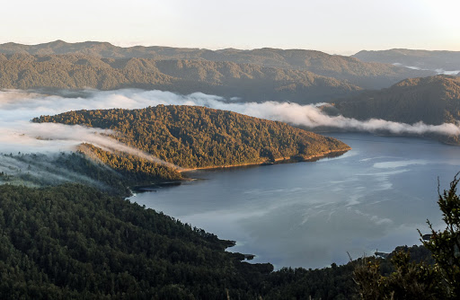

Oceania
If you want an adventure down under, then our Oceania trips are for you! Featuring gorgeous waterfalls,
thrilling canoe rides, and craggy peaks, the trips listed below let you experience the best of Australia
and New Zealand. Epic MT offers three different Oceania trips: Cradle Mountain National Park, Lake Waikaremoana
Great Walk, and Whanganui Journey. Read below to find out more!

Cradle Mountain National Park
Cradle Mountain National Park
Cradle Mountain National Park is known for its beautiful blue lake and famous craggy peak and is a
sought-after location for many backpackers worldwide. Located in Tasmania, Australia, our Cradle Mountain
National Park trip is perfect for beginners. Lasting 7 days, this backpacking adventure features a variety
of hikes around the park including the Dove Lake Circuit and a hike to the Marian Lookout. If you choose this
adventure, expect stunning views, unique wildlife(like nocturnal wombats!), and crystal blue lakes!
Book

Lake Waikaremoana Great Walk

Lake Waikaremoana Great Walk
The Lake Waikaremoana Great Walk is a popular backpacking route in New Zealand that is a part of the
Great Walk family. Spanning over 44-kilometers, the route passes along the southern and western coast of
Lake Waikaremoana in the North Island of New Zealand. Best for intermediate backpackers, the trip will
take about four days, with hikers staying in campsites and huts overnight. If you choose this backpacking
adventure, expect to see New Zealand’s forests, grasslands, and stunning views of Lake Waikaremoana.
Book
Whanganui Journey
Whanganui Journey
Diverting from our normal options, our final Oceania trip is a kayaking adventure. Available
from late October to late April, the Whanganui Journey is a five-day trip down the beautiful Whanganui
River (the longest river in New Zealand). Starting in Tamarau and ending in Pipiriki, campers will travel downriver
into the lush forests of a New Zealand national park. Adventurers who choose this trip can expect to drift through
steep-sided canyons, experience unique wildlife like kiwis, fantails, and tui, and take small hiking breaks to
cool sights, like an abandoned bridge that was intended to make it easier to reach the Mangapurua Valley Soldiers Settlement.
Book